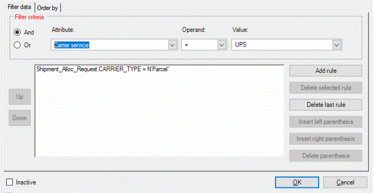
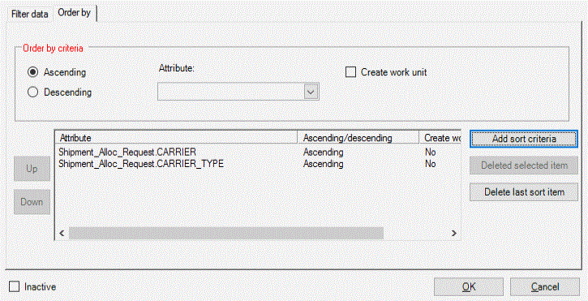
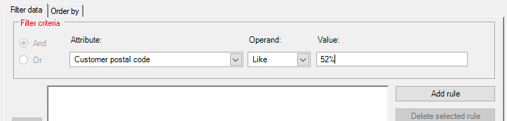
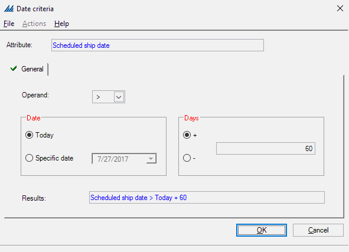

You will use the filter data configuration windows to create and maintain rule sets for specific functional areas, such as work creation, paperwork, and wave processing. This type of window allows you to define the criteria by which the system will filter through records and choose a select group for processing.
You can access these windows through the Configurations Explorer. Filter data configuration windows deal with several functional areas of the system.
A filter data configuration window is composed of two tabs of information: the Filter Data Tab and the Order By Tab. The Filter Data Tab allows you to create "rules" to filter specific data by. The Order Tab allows you to arrange these rules in an order that meets your business needs:
The Filter Data Tab has two field sections: the filter criteria fields and the value list. The filter criteria fields specify the values that the system will use to perform a specific action. In the graphic below, a new criteria rule is being created, namely that if a carrier service equals the value "UPS", then an action will be performed. The value list displays all of the filter criteria rules in the order that they'll be processed. In the graphic below, there is already an existing filter criteria listed in the value list, specifically if a carrier type equals "Parcel". If the user were to press the Add Button in the example below, then the carrier service filter criteria record would be added to the value list.

The Order By Tab has two field sections: the order by fields and the value list. For each record that you create, you can identify the following: the request record that the system will use to organize the instructions, as well as the order that they are organized (ascending/descending). The value list displays all of the records created on the order by fields. These records are processed in the order that they appear in the list.


